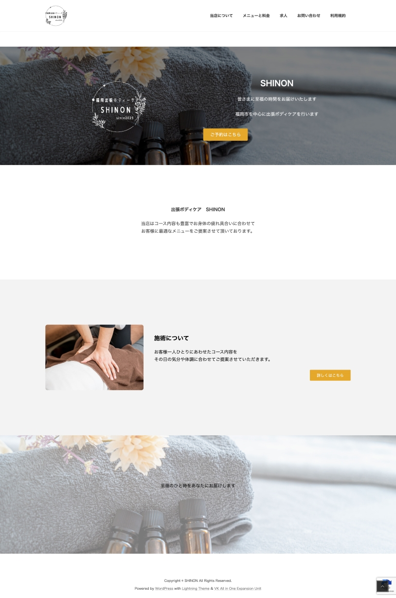
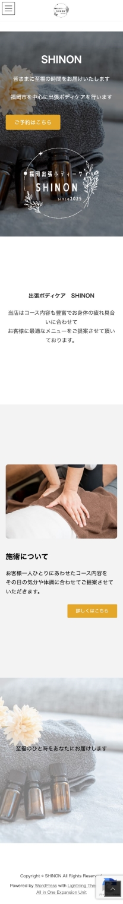

福岡市を中心に出張ボディケアを行います。皆様には、至福の時間をお届けいたします。
老若男女問わずリラックスしたい方・癒しを求める方
Xサーバーの無料版デザインを使用して簡素的に制作をしたため、もう少しデザイン的な特徴のあるデザインをし、「出張ボディケアSHINON」のサイトに訪れた方の印象に残るようにしたい。
TOP部分にサイトのロゴと簡易的な説明、予約ボタンを配置して、予約をすぐできるように。
リラックス感や清潔感を表すため、白をベースに暖色を使用。重要箇所は赤字にし、より見てもらえるようにしました。
明るく清潔感のあるデザインにしました。重要箇所を目立つ色にし、邪魔をしないようにその他は無彩色を使用。画像を使用し、お客様にイメージしてもらいやすく。
ロゴ書き起こし：8時間
サイト制作：合計約48時間
Illustrator / Wordpress